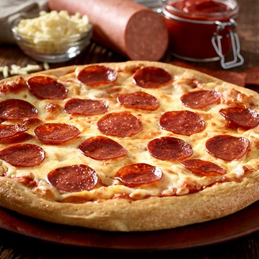

Pepperoni Pizza

Description
Here is a recipe on how to make pizza.
Ingredients
Pizza
- flour
- mozzarella cheese
- pepperoni
- tomato sauce/paste
- garlic powder
- dried, crushed basil
- onion powder
- sugar
- salt
- cooking oil
- dry yeast
Steps
To make pizza saue:
- Combine tomato sauce, onion powder, garlic powder, dried & crushed basil, salt and sugar into a medium bowl
- Fill the bowl with 1/2 cup of water.
- Set aside for flavors to develop
To make pizza crust:
- Combine 2 cups of flour with dry yeast, sugar & salt.
- Add water & oil and mix until blended well for 1 minute
- Gradually add flour slowly until a soft and sticky dough ball forms
- Knead the dough for 4 minutes on a floured surface until the dough is smooth and elastic
- Divide the dough in half & pat into greased pizza pan
- Preheat the oven to 425 degrees & top the crust with sauce, pepperoni & cheese.
- Bake the pizza for 18 to 20 minutes until the crusts are browned & cheese is melted.